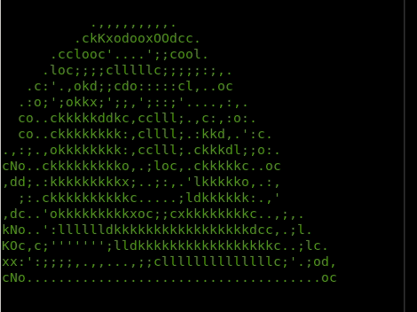

| |
|---|
| Számítógép architektúra |
|---|
Tantárgy feladata és célja: |
| A számítógép belső működési modelljének, az általános mikroprocesszoros architektúrának megismertetése. Bemutatásra kerülnek a számítógép főbb komponensei, az operatív tár, a sínek, a be-/kimeneti eszközök, a háttértárak, a megjelenítők, a billentyűzetek, a mutató eszközök és nyomtatók, mindezek felépítése és működési elve. A gyakorlatokon a hallgatók elsajátítják az alapvető OS parancsokat és megismerkednek a burokprogramozással. |
| Tudás: Ismeri az informatikai rendszerek hardver és szoftver elemeinek működését, megvalósításuk technológiáját, működtetéséből származó feladatok megoldásának mikéntjét, valamint informatikai és egyéb műszaki rendszerek összekapcsolásának lehetőségeit. Ismeri a főbb programozási paradigmákat, programnyelveket, fejlesztési eszközöket. Tudása kiterjed az információs rendszerek modellezésére, adatbázis alapú rendszerek kialakítására, számítógépes hálózatok felépítésére, működésére és implementációjára, felhasználói interfészek és grafikus alkalmazások megvalósítására, intelligens rendszerek jellemzőire, a mobil alkalmazásfejlesztés sajátosságaira, a korszerű, általános célú operációs rendszerek menedzselésére, és az IT biztonság szempontjaira. Ismeri az informatika és a mérnöki szakma szókincsét és kifejezési sajátosságait magyar és angol nyelven, legalább alapszinten. |
Képesség: Képes a megszerzett alapismeretekre építve egy-egy műszaki informatikai területen mélyebb ismeretek önálló megszerzésére, a szakirodalom feldolgozására, majd a területhez kapcsolódó informatikai problémák megoldására. Együttműködik informatikusokkal és villamosmérnökökkel a csoportmunka során, és más szakterületek képviselőivel is az adott probléma követelményelemzésének és megoldásának kimunkálása során. Folyamatosan képezi magát és lépést tart az informatikai szakma fejlődésével. |
Attitűd: Hitelesen képviseli a mérnöki és informatikai szakterületek szakmai alapelveit. A saját munkaterületén túl a teljes műszaki rendszer átlátására törekszik. Nyitott az új módszerek, programozási nyelvek, eljárások megismerésére és azok készség szintű elsajátítására. |
Autonomia és felelősség: Felelősséget érez az önálló és csoportban végzett informatikai rendszerelemzői, -fejlesztői és -üzemeltetési tevékenységéért. Feltárja az alkalmazott technológiák hiányosságait, a folyamatok kockázatait és kezdeményezi az ezeket csökkentő intézkedések megtételét. |
Fontos kód a unix terminálban: curl parrot.live |
|  |